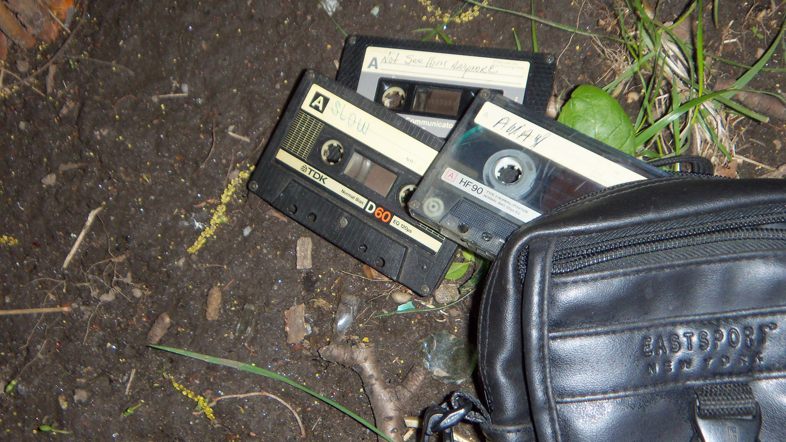

Hello. The tracks on this page are digitized versions of audio from cassettes which I personally recovered. I found them while on a trip to visit my relatives upstate near Lowsville . They were sitting in a case with a camcorder under a tree trunk in an abandoned section of town I was exploring. Since it seemed like they had been abandoned a while ago, I took them home. Although the camcorder was damaged beyond use or repair, the cassettes were in relatively playable condition. While none of the video footage worked, I was able to recover and clean some of the audio… which is what I am sharing with you on this page. I still can’t wrap my head around what happens on these tapes. It sounds ominous - and potentially tragic.
Here are some images I shot from where I initially found the tapes. Below are the aftermentioned audio files which I have luckily been able to upload...
Please contact me at Send Email if you have any ideas or information that may help solve this - whatever it may be. All forms of insight are welcome.
Credits: dotY21. “hard static loop.” Freesound.org. 19 June. 2017
Credits: Deathscyp. “Heavy Breathing.” Freesound.org. 9 January. 2021
Credits: supersplat1. “Door Opening and closing.” Freesound.org. 14 April. 2017
Credits: Guz99. “Village Edge Night with Away Storm.” Freesound.org. 16 August. 2021
by @hiyoriiko.